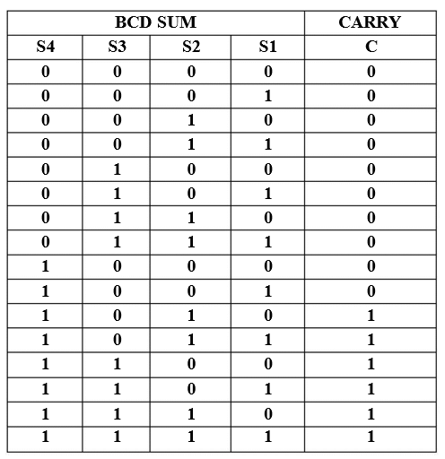
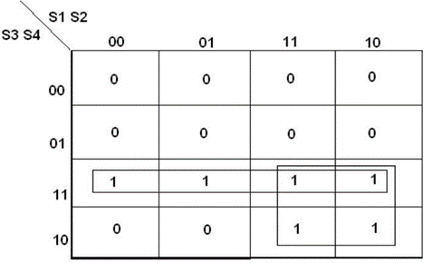
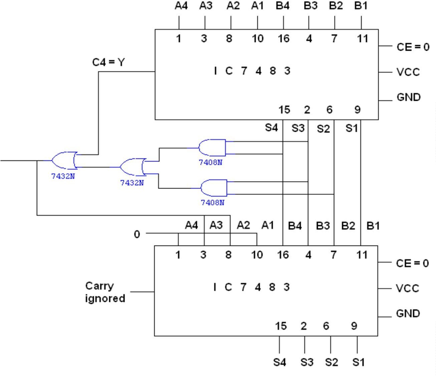

Design and implement a 1 digit BCD adder using IC7483.
4 Bit BCD Adder:
BCD adder adds 2 BCD digits and produces a sum digit in BCD. The 2 decimal digits, together with the input carry, are first added in the top 4 bit adder to produce the binary sum.
Rules for BCD addition:
1. Add two numbers using rules of Binary addition.
2. If the 4 bit sum is greater than 9 or if carry is generated then the sum is invalid. To correct the sum add 0110 i. e. (6)10 to sum. If carry is generated from this addition add it to next higher order BCD digit.
3. If the 4 bit sum is less than 9 or equal to 9 then sum is in proper form.
CASE I: Sum <= 9 & carry = 0.
Add BCD digits 3 & 4
0 0 1 1
0 1 0 0
=======
0 1 1 1
Answer is valid BCD number = (7)BCD& so 0110 is not added.
CASE II: Sum > 9 & carry = 0.
Add BCD digits 6 & 5
0 1 1 0
0 1 0 1
=======
1 0 1 1
Invalid BCD (since sum > 9) so 0110 is to be added
Add BCD digits 6 & 5
1 0 1 1
0 1 1 0
=======
1 0 0 0 1
Valid BCD result = (11) BCD
CASE III: Sum < = 9 & carry = 1.
Add BCD digits 9 & 9
1 0 0 1
1 0 0 1
=======
1 0 0 1 0
Invalid BCD (since Carry = 1) so 0110 is to be added
1 0 0 1 0
0 1 1 0
=======
1 1 0 0 0
Valid BCD result = (18) BCD
1. To execute the first step i. e. binary addition of two 4 bit numbers we will use IC 7483 (with Cin = 0), which is a 4-bit binary adder.
2. We need to design a digital circuit which will sense sum & carry of IC 7483 & if the sum exceeds 9 or carry = 1, this digital circuit will produce high output otherwise its output will be zero.
Circuit to check invalid BCD:
First, we will design circuit to checksum& then we will logically OR output of this circuit to carry output of IC 7483
For digital circuit which we are going to design, we will have 4 inputs (S4, S3, S2, S1) & only 1 output Y.
a) Y output of this circuit. Will be ORed with carry output of the first adder IC 7483.
b) If BCD result is invalid i. e. sum output of first 7483 we have to add (6)10 i.e. (0110)2 that means we need one more binary adder IC 7483.
c) If BCD result is valid (i.e. final output of the circuit to check validity is 0) we will make an arrangement that second adder IC 7483 adds (0)10 i. e. (0000)2 to the sum of the first adder
IC 7483. The output of the combinational circuit is used as final output carry& carry output of the second adder IC is ignored.
Pin Diagram for IC 7483:

1] Truth Table for design of combinational circuit for BCD adder to check invalid BCD:
2] K-map for reduced Boolean expressions of output :

3] Circuit diagram:

Follow the below steps
1. Connections were given as per circuit diagram.2. Logical inputs were given as per truth table.
3. Observe the logical output and verify with the truth tables.
Here you can embed an interactive simulation tool or provide links to simulation resources.
Q.1] Explain the significance of. BCD number system?
An advantage of the Binary Coded Decimal system is each decimal digit is denoted by a group of 4 binary digits and that it allows easy conversion between decimal a base-10 system and binary a base-2 system.
Q.2] State the applications of BCD & Excess 3 code?
BCD codes commonly used in digital systems that require precise decimal arithmetic, such as calculators, cash registers, and accounting systems.
It is also used in real-time clock circuits and measurement systems.
Q.3] Applications of Excess-3 Code?
• Electronic Calculators
• Computer Decimal Arithmetic
• Error Detection
• Digital Communication Systems
• Education and Training
Q.4] What is the difference between BCD and binary codes?
Comparison of BCD with Binary
1. BCD is less efficient than binary
eg:- (78)decimal → (0111 1000)BCD → (1001110)binary
To encode the same decimal number, BCD needs more no. of bits than binary. Hence BCD is less efficient as compared to Binary
2. BCD arithmetic is more complicated than binary arithmetic.
3. Advantage of a BCD code is that the conversion from decimal to BCD or vice versa is simple.
Q.5] What do you mean by unpacked and packed BCD nos?
In the case of unpacked BCD numbers, each four-bit BCD group corresponding to a decimal digit is stored in a separate register inside the machine. In such a case, if the registers are eight bits or wider, the register space is wasted. In the case of packed BCD numbers, two BCD digits are stored in a single eight-bit register. The process of combining two BCD digits so that they are stored in one eight-bit register involves shifting the number in the upper register to the left 4 times and then adding the numbers in the upper and lower registers.
- Reference 1: “Digital Fundamentals” by Floyd & Jain
- Reference 2: R. P. Jain, “Modern Digital Electronics”, 3rd Edition, Tata McGraw-Hill
- Reference 3: 3. Malvino, D.Leach“Digital Principles and Applications”, 5th edition, Tata McGraw- Hill